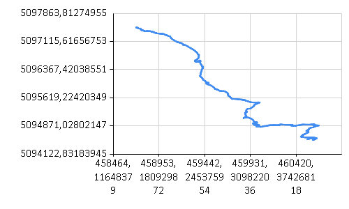
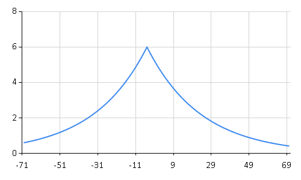
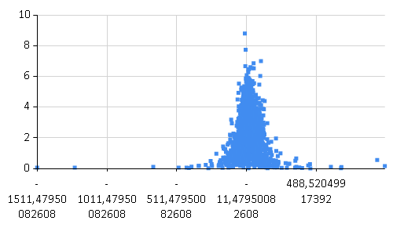
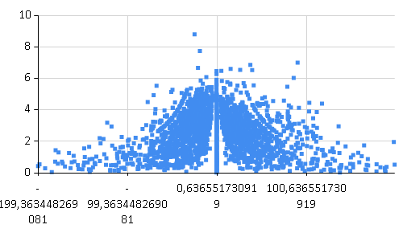
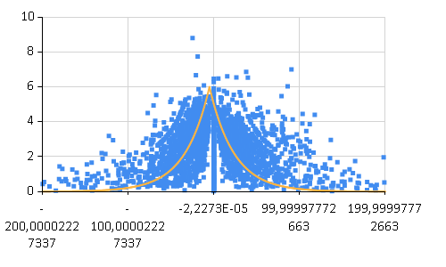

Extimate walk time for routes stored in shape file
In this section I want to explore a gpx trace of a trekking I made on 10 April 2016 to one of the central Valgrande mountains named "Cima Sasso".
I want to calculate the actual duration and compare it with an extimated walk time based on trobbler's hiking function.
Then I will use the Gdal's function to access a shape file containing the foot paths to the main peaks in the Val Grande Natinal Parks and I will calculate an extimated time for all of them based on what I've learned from the gpx analysis.
I start loading the gpx file with the Xml Type Privider and see its content. To correctly instruct the provider I give a sample with two tracks two track segments for tracks and two points for each segments even if my gpx contains only one track with one track segments in it. I do this because in general a gpx can contain more then one of these elements.
1: 2: 3: 4: 5: 6: 7: |
|
The gpx sotres just one track named with the date I made the trecking:
1: 2: 3: 4: 5: |
|
|
The gpx can be converted in a linestring:
1: 2: 3: 4: 5: 6: |
|
Gpx stores points in EPSG:4326 but is better to convert in EPSG:32632 to get lenghts in meters from gdal library
1: 2: 3: 4: 5: 6: 7: 8: 9: 10: |
|
With the gpx track converted in a line string we can obtain its length with the Gdal's functions:
1:
|
|
|
And taking advantage of the function plot defined in Plot Geometries
we can graphically visualize its shape:
1:
|
|

The length of the path is an important variable to calculate an extimation of the walk time but anohter important variabile is its elevation profile.
Infact, normally a person walks at about 5 km/h in plain but the velocity decreases both ascending and descending on a steep path like the one in object.
It is usefull to extract the elevation profile of the track.
For this first we combine the distance from the start of the track with the current elevation
1: 2: 3: 4: 5: 6: 7: 8: 9: 10: 11: 12: 13: 14: 15: 16: 17: |
|
and then we plot the tuples on a chart:
1: 2: |
|

So knowing the elevation of each point, how we can predict at which velocity a normal person will walk at each and the calculate the total time multiplying this velocity with the distance walked from the previous point?
Well an attempt to answer this question was given by Trobbler with its "hiking function":
1: 2: |
|
Trobbler's hiking function calculates an expected velocity based on the slope of the hiking and extimates a maximum velocity at 5% descendind slope which decreases for increasing slopes both descending or ascending.
We can plot the function to visualize its curve:
1:
|
|

I want to use this function and extract the following metrics for each point in the track: elevation, distance from previous point, total distance, slope, track time, duration from previous point, actual velocity, extimated velocity based on trobbler's hiking function.
The linestring is not really convenient because looses the information of the time associated to each track point and it does not give me fields to store every information.
So I define a more structured Data Type:
1: 2: 3: 4: 5: 6: 7: 8: 9: 10: 11: |
|
and populate a collection of elements of this type:
1: 2: 3: 4: 5: 6: 7: 8: 9: 10: 11: 12: 13: 14: 15: 16: 17: 18: 19: 20: 21: 22: 23: 24: 25: 26: 27: 28: 29: 30: 31: 32: 33: 34: 35: 36: 37: 38: |
|
We can convert this in a frame to visualize the informations extracted:
1: 2: 3: |
|
Geom |
Distance |
Slope |
... |
ActualVelocity |
ExtimatedlVelocity |
ExtimatedDuration |
|
|---|---|---|---|---|---|---|---|
0 |
OSGeo.OGR.Geometry |
1,208 |
0,398 |
... |
2,174 |
1,251 |
3,476 |
1 |
OSGeo.OGR.Geometry |
3,743 |
0 |
... |
4,492 |
5,037 |
2,676 |
2 |
OSGeo.OGR.Geometry |
1,275 |
0,3769 |
... |
0,9178 |
1,347 |
3,408 |
3 |
OSGeo.OGR.Geometry |
5,622 |
0 |
... |
5,059 |
5,037 |
4,018 |
4 |
OSGeo.OGR.Geometry |
0,7925 |
-0,6062 |
... |
0,4755 |
1 |
2,853 |
5 |
OSGeo.OGR.Geometry |
1,541 |
0 |
... |
5,548 |
5,037 |
1,101 |
6 |
OSGeo.OGR.Geometry |
11,99 |
0,08016 |
... |
5,396 |
3,805 |
11,35 |
7 |
OSGeo.OGR.Geometry |
9,714 |
0 |
... |
4,371 |
5,037 |
6,943 |
... |
... |
... |
... |
... |
... |
... |
... |
2769 |
OSGeo.OGR.Geometry |
10,73 |
0,04481 |
... |
4,828 |
4,306 |
8,97 |
2770 |
OSGeo.OGR.Geometry |
7,7 |
0 |
... |
4,62 |
5,037 |
5,503 |
2771 |
OSGeo.OGR.Geometry |
8,556 |
0,1123 |
... |
4,4 |
3,399 |
9,061 |
2772 |
OSGeo.OGR.Geometry |
0,8972 |
1,071 |
... |
0,8075 |
1 |
3,23 |
The Deedle frame provide us with functions, among the others, to aggregate the data and to see for example the total distance of the track:
1: 2: 3: |
|
|
The total length is still equivalent to that calculated for the linestring.
Let's plot the actual velocity for each point:
1:
|
|

Slopes above 200% (descending or ascending) make the chart too confused so let's filter them out:
1:
|
|

It looks better and we can combine it with the plot of the trobbler's hiking function to see the correlation:
1: 2: 3: 4: 5: |
|

Finally compare the actual duration with the extimated one and see that the extimation is really similar to the actual time of the track.
1: 2: 3: 4: |
|
|
To generlize the subject now I will calculate an extimated time for all the foot paths stored in a shape file.
The shapefile valgrandetrackscrosa_lenz.shp stores the paths to the valgrande peaks with the time extimated by the book "Valgrande National Park - Paths, history and nature" by Paolo Crosa Lenz. The time is probably calculated in an empirical way so will be a good term of comparison for our calculation.
To access the data I will use the OgrTypeProvider defined in FSharp.Gdal
1: 2: |
|
ID |
CODE |
SUBCODE |
TITLE |
TIME |
Geometry |
|
|---|---|---|---|---|---|---|
0 |
1 |
1 |
Cima Sasso |
3,3 |
OSGeo.OGR.Geometry |
|
1 |
4 |
4 |
Pizzo Proman |
4,3 |
OSGeo.OGR.Geometry |
|
2 |
2 |
2 |
b |
Monte Faie |
5 |
OSGeo.OGR.Geometry |
3 |
3 |
3 |
Cima Corte Lorenzo |
3 |
OSGeo.OGR.Geometry |
|
4 |
5 |
5 |
Cima Saler |
4,3 |
OSGeo.OGR.Geometry |
|
5 |
6 |
6 |
Pizzo delle Pecore |
4,3 |
OSGeo.OGR.Geometry |
|
6 |
12 |
12 |
Cima Pedum |
5,15 |
OSGeo.OGR.Geometry |
|
7 |
7 |
7 |
Punta Pozzolo |
5,3 |
OSGeo.OGR.Geometry |
|
... |
... |
... |
... |
... |
... |
... |
12 |
13 |
13 |
Cimone di Cortechiuso |
4 |
OSGeo.OGR.Geometry |
|
13 |
14 |
14 |
Monte Torrione |
4,3 |
OSGeo.OGR.Geometry |
|
14 |
15 |
15 |
La Piota |
3,3 |
OSGeo.OGR.Geometry |
|
15 |
16 |
16 |
b |
Monte Zeda da Falmenta |
4,3 |
OSGeo.OGR.Geometry |
The geometries in this shape file don't store elevation so we'll get this information from a dem raster file:
1: 2: 3: 4: |
|
The function extractMetrics below caluclates all the metrics we need in a way similar to that
we used above to populate the infos collection from the gpx file but it also extracts
from the dem file the elevation information with the FSharp.Gdal functions
Raster.groundToImage and Raster.getImgValue. The return type of the function is
a collection of PointMetrics (defined below) for each point in the linestrings of the
paths:
1: 2: 3: 4: 5: 6: 7: 8: 9: 10: 11: 12: 13: 14: 15: 16: 17: 18: 19: 20: 21: 22: 23: 24: 25: 26: 27: 28: 29: 30: 31: 32: 33: 34: 35: 36: 37: 38: 39: 40: 41: 42: 43: 44: 45: 46: 47: 48: 49: 50: 51: 52: 53: 54: 55: 56: 57: 58: |
|
sumTime aggregates the extimated elapsed forward time of each point
to finally calculate the total extimated time given a collection of PointMetrics
1: 2: 3: 4: 5: 6: 7: |
|
Given theese functions we can populate a new deedle frame with our extimated time:
1: 2: 3: 4: 5: 6: 7: |
|
MYTIME |
|
|---|---|
0 |
2,78 |
1 |
4,27 |
2 |
5,35 |
3 |
2,49 |
4 |
2,11 |
5 |
3,58 |
6 |
3,94 |
7 |
3,77 |
... |
... |
12 |
3,76 |
13 |
3,46 |
14 |
2,43 |
15 |
3,49 |
and join the two frames to compare the values calculating a delta percentage:
1: 2: 3: 4: 5: |
|
ID |
CODE |
SUBCODE |
... |
Geometry |
MYTIME |
Delta % |
|
|---|---|---|---|---|---|---|---|
0 |
1 |
1 |
... |
OSGeo.OGR.Geometry |
2,78 |
-16 |
|
1 |
4 |
4 |
... |
OSGeo.OGR.Geometry |
4,27 |
-1 |
|
2 |
2 |
2 |
b |
... |
OSGeo.OGR.Geometry |
5,35 |
7 |
3 |
3 |
3 |
... |
OSGeo.OGR.Geometry |
2,49 |
-17 |
|
4 |
5 |
5 |
... |
OSGeo.OGR.Geometry |
2,11 |
-51 |
|
5 |
6 |
6 |
... |
OSGeo.OGR.Geometry |
3,58 |
-17 |
|
6 |
12 |
12 |
... |
OSGeo.OGR.Geometry |
3,94 |
-23 |
|
7 |
7 |
7 |
... |
OSGeo.OGR.Geometry |
3,77 |
-29 |
|
... |
... |
... |
... |
... |
... |
... |
... |
12 |
13 |
13 |
... |
OSGeo.OGR.Geometry |
3,76 |
-6 |
|
13 |
14 |
14 |
... |
OSGeo.OGR.Geometry |
3,46 |
-20 |
|
14 |
15 |
15 |
... |
OSGeo.OGR.Geometry |
2,43 |
-26 |
|
15 |
16 |
16 |
b |
... |
OSGeo.OGR.Geometry |
3,49 |
-19 |
1:
|
|
|
The worst result is on "Cima Saler" track: my extimation is half of that reported by the book and should be investigated. Anyway the other results seem good enough: my extimation is just about 20% more optimistic than the empirical one.
namespace FSharp
--------------------
namespace Microsoft.FSharp
namespace FSharp.Data
--------------------
namespace Microsoft.FSharp.Data
from FSharp.Gdal
Full name: Extimated-walk-time.Gpx
Full name: Extimated-walk-time.content
type StreamReader =
inherit TextReader
new : stream:Stream -> StreamReader + 9 overloads
member BaseStream : Stream
member Close : unit -> unit
member CurrentEncoding : Encoding
member DiscardBufferedData : unit -> unit
member EndOfStream : bool
member Peek : unit -> int
member Read : unit -> int + 1 overload
member ReadLine : unit -> string
member ReadToEnd : unit -> string
...
Full name: System.IO.StreamReader
--------------------
StreamReader(stream: Stream) : unit
StreamReader(path: string) : unit
StreamReader(stream: Stream, detectEncodingFromByteOrderMarks: bool) : unit
StreamReader(stream: Stream, encoding: Text.Encoding) : unit
StreamReader(path: string, detectEncodingFromByteOrderMarks: bool) : unit
StreamReader(path: string, encoding: Text.Encoding) : unit
StreamReader(stream: Stream, encoding: Text.Encoding, detectEncodingFromByteOrderMarks: bool) : unit
StreamReader(path: string, encoding: Text.Encoding, detectEncodingFromByteOrderMarks: bool) : unit
StreamReader(stream: Stream, encoding: Text.Encoding, detectEncodingFromByteOrderMarks: bool, bufferSize: int) : unit
StreamReader(path: string, encoding: Text.Encoding, detectEncodingFromByteOrderMarks: bool, bufferSize: int) : unit
Full name: Extimated-walk-time.gpx
Parses the specified XML string
Full name: Extimated-walk-time.trackCounts
Full name: Extimated-walk-time.trackName
Full name: Microsoft.FSharp.Core.ExtraTopLevelOperators.printfn
module Configuration
from FSharp.Gdal
--------------------
namespace System.Configuration
Full name: FSharp.Gdal.Configuration.Init
Full name: Microsoft.FSharp.Core.Operators.ignore
Full name: Extimated-walk-time.line
type Geometry =
new : type:wkbGeometryType -> Geometry + 2 overloads
member AddGeometry : other:Geometry -> int
member AddGeometryDirectly : other_disown:Geometry -> int
member AddPoint : x:float * y:float * z:float -> unit
member AddPoint_2D : x:float * y:float -> unit
member Area : unit -> float
member AssignSpatialReference : reference:SpatialReference -> unit
member Boundary : unit -> Geometry
member Buffer : distance:float * quadsecs:int -> Geometry
member Centroid : unit -> Geometry
...
Full name: OSGeo.OGR.Geometry
--------------------
Geometry(type: wkbGeometryType) : unit
Geometry(cPtr: nativeint, cMemoryOwn: bool, parent: obj) : unit
Geometry(type: wkbGeometryType, wkt: string, wkb: int, wkb_buf: nativeint, gml: string) : unit
| wkbUnknown = 0
| wkbPoint = 1
| wkbLineString = 2
| wkbPolygon = 3
| wkbMultiPoint = 4
| wkbMultiLineString = 5
| wkbMultiPolygon = 6
| wkbGeometryCollection = 7
| wkbNone = 100
| wkbLinearRing = 101
...
Full name: OSGeo.OGR.wkbGeometryType
val float : value:'T -> float (requires member op_Explicit)
Full name: Microsoft.FSharp.Core.Operators.float
--------------------
type float = Double
Full name: Microsoft.FSharp.Core.float
--------------------
type float<'Measure> = float
Full name: Microsoft.FSharp.Core.float<_>
Full name: Extimated-walk-time.inSpatialRef
type SpatialReference =
new : wkt:string -> SpatialReference + 1 overload
member AutoIdentifyEPSG : unit -> int
member Clone : unit -> SpatialReference
member CloneGeogCS : unit -> SpatialReference
member CopyGeogCSFrom : rhs:SpatialReference -> int
member Dispose : unit -> unit
member EPSGTreatsAsLatLong : unit -> int
member EPSGTreatsAsNorthingEasting : unit -> int
member ExportToMICoordSys : argout:string -> int
member ExportToPCI : proj:string * units:string -> int
...
Full name: OSGeo.OSR.SpatialReference
--------------------
SpatialReference(wkt: string) : unit
SpatialReference(cPtr: nativeint, cMemoryOwn: bool, parent: obj) : unit
Full name: Extimated-walk-time.outSpatialRef
Full name: Extimated-walk-time.length
Full name: Plot-geometries.plot
Plots a geometry at a zoom of 80%
Full name: Extimated-walk-time.distanceElev
type m
Full name: FSharp.Gdal.UM.m
type List<'T> =
new : unit -> List<'T> + 2 overloads
member Add : item:'T -> unit
member AddRange : collection:IEnumerable<'T> -> unit
member AsReadOnly : unit -> ReadOnlyCollection<'T>
member BinarySearch : item:'T -> int + 2 overloads
member Capacity : int with get, set
member Clear : unit -> unit
member Contains : item:'T -> bool
member ConvertAll<'TOutput> : converter:Converter<'T, 'TOutput> -> List<'TOutput>
member CopyTo : array:'T[] -> unit + 2 overloads
...
nested type Enumerator
Full name: System.Collections.Generic.List<_>
--------------------
List() : unit
List(capacity: int) : unit
List(collection: IEnumerable<'T>) : unit
Full name: Microsoft.FSharp.Collections.List.pairwise
Full name: Microsoft.FSharp.Collections.List.map
Full name: Extimated-walk-time.xy
static member Area : data:seq<#value> * ?Name:string * ?Title:string * ?Labels:#seq<string> * ?Color:Color * ?XTitle:string * ?YTitle:string -> GenericChart
static member Area : data:seq<#key * #value> * ?Name:string * ?Title:string * ?Labels:#seq<string> * ?Color:Color * ?XTitle:string * ?YTitle:string -> GenericChart
static member Bar : data:seq<#value> * ?Name:string * ?Title:string * ?Labels:#seq<string> * ?Color:Color * ?XTitle:string * ?YTitle:string -> GenericChart
static member Bar : data:seq<#key * #value> * ?Name:string * ?Title:string * ?Labels:#seq<string> * ?Color:Color * ?XTitle:string * ?YTitle:string -> GenericChart
static member BoxPlotFromData : data:seq<#key * #seq<'a2>> * ?Name:string * ?Title:string * ?Color:Color * ?XTitle:string * ?YTitle:string * ?Percentile:int * ?ShowAverage:bool * ?ShowMedian:bool * ?ShowUnusualValues:bool * ?WhiskerPercentile:int -> GenericChart (requires 'a2 :> value)
static member BoxPlotFromStatistics : data:seq<#key * #value * #value * #value * #value * #value * #value> * ?Name:string * ?Title:string * ?Labels:#seq<string> * ?Color:Color * ?XTitle:string * ?YTitle:string * ?Percentile:int * ?ShowAverage:bool * ?ShowMedian:bool * ?ShowUnusualValues:bool * ?WhiskerPercentile:int -> GenericChart
static member Bubble : data:seq<#value * #value> * ?Name:string * ?Title:string * ?Labels:#seq<string> * ?Color:Color * ?XTitle:string * ?YTitle:string * ?BubbleMaxSize:int * ?BubbleMinSize:int * ?BubbleScaleMax:float * ?BubbleScaleMin:float * ?UseSizeForLabel:bool -> GenericChart
static member Bubble : data:seq<#key * #value * #value> * ?Name:string * ?Title:string * ?Labels:#seq<string> * ?Color:Color * ?XTitle:string * ?YTitle:string * ?BubbleMaxSize:int * ?BubbleMinSize:int * ?BubbleScaleMax:float * ?BubbleScaleMin:float * ?UseSizeForLabel:bool -> GenericChart
static member Candlestick : data:seq<#value * #value * #value * #value> * ?Name:string * ?Title:string * ?Labels:#seq<string> * ?Color:Color * ?XTitle:string * ?YTitle:string -> CandlestickChart
static member Candlestick : data:seq<#key * #value * #value * #value * #value> * ?Name:string * ?Title:string * ?Labels:#seq<string> * ?Color:Color * ?XTitle:string * ?YTitle:string -> CandlestickChart
...
Full name: FSharp.Charting.Chart
static member Chart.Line : data:seq<#value> * ?Name:string * ?Title:string * ?Labels:#seq<string> * ?Color:Drawing.Color * ?XTitle:string * ?YTitle:string -> ChartTypes.GenericChart
static member Chart.Line : data:seq<#key * #value> * ?Name:string * ?Title:string * ?Labels:#seq<string> * ?Color:Drawing.Color * ?XTitle:string * ?YTitle:string -> ChartTypes.GenericChart
Full name: Extimated-walk-time.trobblersHikingFunction
static val PI : float
static val E : float
static member Abs : value:sbyte -> sbyte + 6 overloads
static member Acos : d:float -> float
static member Asin : d:float -> float
static member Atan : d:float -> float
static member Atan2 : y:float * x:float -> float
static member BigMul : a:int * b:int -> int64
static member Ceiling : d:decimal -> decimal + 1 overload
static member Cos : d:float -> float
...
Full name: System.Math
Math.Abs(value: float) : float
Math.Abs(value: float32) : float32
Math.Abs(value: int64) : int64
Math.Abs(value: int) : int
Math.Abs(value: int16) : int16
Math.Abs(value: sbyte) : sbyte
{Geom: Geometry;
Distance: float<m>;
Slope: float;
TrackTime: DateTime;
ActualDuration: float<s>;
ActualVelocity: float<km/h>;
ExtimatedlVelocity: float<km/h>;
ExtimatedDuration: float<s>;}
Full name: Extimated-walk-time.Info
type DateTime =
struct
new : ticks:int64 -> DateTime + 10 overloads
member Add : value:TimeSpan -> DateTime
member AddDays : value:float -> DateTime
member AddHours : value:float -> DateTime
member AddMilliseconds : value:float -> DateTime
member AddMinutes : value:float -> DateTime
member AddMonths : months:int -> DateTime
member AddSeconds : value:float -> DateTime
member AddTicks : value:int64 -> DateTime
member AddYears : value:int -> DateTime
...
end
Full name: System.DateTime
--------------------
DateTime()
(+0 other overloads)
DateTime(ticks: int64) : unit
(+0 other overloads)
DateTime(ticks: int64, kind: DateTimeKind) : unit
(+0 other overloads)
DateTime(year: int, month: int, day: int) : unit
(+0 other overloads)
DateTime(year: int, month: int, day: int, calendar: Globalization.Calendar) : unit
(+0 other overloads)
DateTime(year: int, month: int, day: int, hour: int, minute: int, second: int) : unit
(+0 other overloads)
DateTime(year: int, month: int, day: int, hour: int, minute: int, second: int, kind: DateTimeKind) : unit
(+0 other overloads)
DateTime(year: int, month: int, day: int, hour: int, minute: int, second: int, calendar: Globalization.Calendar) : unit
(+0 other overloads)
DateTime(year: int, month: int, day: int, hour: int, minute: int, second: int, millisecond: int) : unit
(+0 other overloads)
DateTime(year: int, month: int, day: int, hour: int, minute: int, second: int, millisecond: int, kind: DateTimeKind) : unit
(+0 other overloads)
type s
Full name: FSharp.Gdal.UM.s
type km
Full name: FSharp.Gdal.UM.km
type h
Full name: FSharp.Gdal.UM.h
{Geom: Geometry;
Time: DateTime;}
Full name: Extimated-walk-time.Point
Full name: Extimated-walk-time.infos
Full name: Microsoft.FSharp.Collections.List.ofArray
Full name: FSharp.Gdal.UM.msToKmph
(+0 other overloads)
Math.Max(val1: float, val2: float) : float
(+0 other overloads)
Math.Max(val1: float32, val2: float32) : float32
(+0 other overloads)
Math.Max(val1: uint64, val2: uint64) : uint64
(+0 other overloads)
Math.Max(val1: int64, val2: int64) : int64
(+0 other overloads)
Math.Max(val1: uint32, val2: uint32) : uint32
(+0 other overloads)
Math.Max(val1: int, val2: int) : int
(+0 other overloads)
Math.Max(val1: uint16, val2: uint16) : uint16
(+0 other overloads)
Math.Max(val1: int16, val2: int16) : int16
(+0 other overloads)
Math.Max(val1: byte, val2: byte) : byte
(+0 other overloads)
Full name: FSharp.Gdal.UM.kmphToMs
Full name: Extimated-walk-time.infosFrame
module Frame
from Deedle
--------------------
type Frame =
static member ReadReader : reader:IDataReader -> Frame<int,string>
static member CustomExpanders : Dictionary<Type,Func<obj,seq<string * Type * obj>>>
static member NonExpandableInterfaces : List<Type>
static member NonExpandableTypes : HashSet<Type>
Full name: Deedle.Frame
--------------------
type Frame<'TRowKey,'TColumnKey (requires equality and equality)> =
interface IDynamicMetaObjectProvider
interface INotifyCollectionChanged
interface IFsiFormattable
interface IFrame
new : names:seq<'TColumnKey> * columns:seq<ISeries<'TRowKey>> -> Frame<'TRowKey,'TColumnKey>
new : rowIndex:IIndex<'TRowKey> * columnIndex:IIndex<'TColumnKey> * data:IVector<IVector> * indexBuilder:IIndexBuilder * vectorBuilder:IVectorBuilder -> Frame<'TRowKey,'TColumnKey>
member AddColumn : column:'TColumnKey * series:ISeries<'TRowKey> -> unit
member AddColumn : column:'TColumnKey * series:seq<'V> -> unit
member AddColumn : column:'TColumnKey * series:ISeries<'TRowKey> * lookup:Lookup -> unit
member AddColumn : column:'TColumnKey * series:seq<'V> * lookup:Lookup -> unit
...
Full name: Deedle.Frame<_,_>
--------------------
new : names:seq<'TColumnKey> * columns:seq<ISeries<'TRowKey>> -> Frame<'TRowKey,'TColumnKey>
new : rowIndex:Indices.IIndex<'TRowKey> * columnIndex:Indices.IIndex<'TColumnKey> * data:IVector<IVector> * indexBuilder:Indices.IIndexBuilder * vectorBuilder:Vectors.IVectorBuilder -> Frame<'TRowKey,'TColumnKey>
static member Frame.ofRecords : values:seq<'T> -> Frame<int,string>
static member Frame.ofRecords : values:IEnumerable * indexCol:string -> Frame<'R,string> (requires equality)
Full name: Extimated-walk-time.totalDistance
static member Chart.Point : data:seq<#key * #value> * ?Name:string * ?Title:string * ?Labels:#seq<string> * ?Color:Drawing.Color * ?XTitle:string * ?YTitle:string * ?MarkerColor:Drawing.Color * ?MarkerSize:int -> ChartTypes.GenericChart
Full name: Microsoft.FSharp.Collections.List.where
Full name: Extimated-walk-time.actualDuration
Full name: FSharp.Gdal.UM.secToHr
Full name: Extimated-walk-time.extimatedDuration
Full name: Extimated-walk-time.valgrandeTracks
Full name: FSharp.Gdal.OgrTypeProvider
Full name: Extimated-walk-time.fmData
Full name: Extimated-walk-time.rDataset
type Gdal =
new : unit -> Gdal
static member AllRegister : unit -> unit
static member ApplyGeoTransform : padfGeoTransform:float[] * dfPixel:float * dfLine:float * pdfGeoX:float * pdfGeoY:float -> unit
static member AutoCreateWarpedVRT : src_ds:Dataset * src_wkt:string * dst_wkt:string * eResampleAlg:ResampleAlg * maxerror:float -> Dataset
static member CPLBinaryToHex : nBytes:int * pabyData:nativeint -> string
static member CPLHexToBinary : pszHex:string * pnBytes:int -> nativeint
static member ComputeMedianCutPCT : red:Band * green:Band * blue:Band * num_colors:int * colors:ColorTable * callback:GDALProgressFuncDelegate * callback_data:string -> int
static member ComputeProximity : srcBand:Band * proximityBand:Band * options:string[] * callback:GDALProgressFuncDelegate * callback_data:string -> int
static member ContourGenerate : srcBand:Band * contourInterval:float * contourBase:float * fixedLevelCount:int * fixedLevels:float[] * useNoData:int * noDataValue:float * dstLayer:Layer * idField:int * elevField:int * callback:GDALProgressFuncDelegate * callback_data:string -> int
static member DataTypeIsComplex : eDataType:DataType -> int
...
nested type GDALErrorHandlerDelegate
nested type GDALProgressFuncDelegate
Full name: OSGeo.GDAL.Gdal
--------------------
Gdal() : unit
| GA_ReadOnly = 0
| GA_Update = 1
Full name: OSGeo.GDAL.Access
Full name: Extimated-walk-time.geotransform
{Point: Geometry;
Elev: float;
Distance: float;
Slope: float;
ExtimatedForwardVelocity: float<km/h>;
ExtimatedForwardTime: float<s>;
ExtimatedReverseVelocity: float<km/h>;
ExtimatedReverseTime: float<s>;}
Full name: Extimated-walk-time.PointMetrics
PointMetrics.Point: Geometry
--------------------
type Point =
{Geom: Geometry;
Time: DateTime;}
Full name: Extimated-walk-time.Point
Full name: Extimated-walk-time.extractMetrics
module Vector
from FSharp.Gdal
--------------------
type Vector =
static member ofOptionalValues : data:seq<OptionalValue<'T>> -> IVector<'T>
static member ofOptionalValues : data:seq<'T option> -> IVector<'T>
static member ofValues : data:seq<'T> -> IVector<'T>
static member ofValues : data:'T [] -> IVector<'T>
Full name: Deedle.F# Vector extensions.Vector
Full name: FSharp.Gdal.Vector.points
from FSharp.Gdal
Full name: FSharp.Gdal.Raster.groundToImage
Full name: FSharp.Gdal.Raster.getImgValue
Full name: Extimated-walk-time.sumTime
val value : float
--------------------
type value = IConvertible
Full name: FSharp.Charting.value
Full name: Microsoft.FSharp.Collections.List.fold
Math.Round(a: float) : float
Math.Round(d: decimal, mode: MidpointRounding) : decimal
Math.Round(d: decimal, decimals: int) : decimal
Math.Round(value: float, mode: MidpointRounding) : float
Math.Round(value: float, digits: int) : float
Math.Round(d: decimal, decimals: int, mode: MidpointRounding) : decimal
Math.Round(value: float, digits: int, mode: MidpointRounding) : float
Full name: Extimated-walk-time.fmMyExtimatedTime
from Microsoft.FSharp.Collections
Full name: Microsoft.FSharp.Collections.Seq.mapi
Full name: Extimated-walk-time.fmWithExtimatedTime
member Frame.Join : colKey:'TColumnKey * series:Series<'TRowKey,'V> -> Frame<'TRowKey,'TColumnKey>
member Frame.Join : otherFrame:Frame<'TRowKey,'TColumnKey> * kind:JoinKind -> Frame<'TRowKey,'TColumnKey>
member Frame.Join : colKey:'TColumnKey * series:Series<'TRowKey,'V> * kind:JoinKind -> Frame<'TRowKey,'TColumnKey>
member Frame.Join : otherFrame:Frame<'TRowKey,'TColumnKey> * kind:JoinKind * lookup:Lookup -> Frame<'TRowKey,'TColumnKey>
member Frame.Join : colKey:'TColumnKey * series:Series<'TRowKey,'V> * kind:JoinKind * lookup:Lookup -> Frame<'TRowKey,'TColumnKey>
module Series
from Deedle
--------------------
type Series =
static member ofNullables : values:seq<Nullable<'a0>> -> Series<int,'a0> (requires default constructor and value type and 'a0 :> ValueType)
static member ofObservations : observations:seq<'a0 * 'a1> -> Series<'a0,'a1> (requires equality)
static member ofOptionalObservations : observations:seq<'K * 'a1 option> -> Series<'K,'a1> (requires equality)
static member ofValues : values:seq<'b> -> Series<int,'b>
Full name: Deedle.F# Series extensions.Series
--------------------
type Series<'K,'V (requires equality)> =
interface IFsiFormattable
interface ISeries<'K>
new : pairs:seq<KeyValuePair<'K,'V>> -> Series<'K,'V>
new : keys:'K [] * values:'V [] -> Series<'K,'V>
new : keys:seq<'K> * values:seq<'V> -> Series<'K,'V>
new : index:IIndex<'K> * vector:IVector<'V> * vectorBuilder:IVectorBuilder * indexBuilder:IIndexBuilder -> Series<'K,'V>
member After : lowerExclusive:'K -> Series<'K,'V>
member Aggregate : aggregation:Aggregation<'K> * observationSelector:Func<DataSegment<Series<'K,'V>>,KeyValuePair<'TNewKey,OptionalValue<'R>>> -> Series<'TNewKey,'R> (requires equality)
member Aggregate : aggregation:Aggregation<'K> * keySelector:Func<DataSegment<Series<'K,'V>>,'TNewKey> * valueSelector:Func<DataSegment<Series<'K,'V>>,OptionalValue<'R>> -> Series<'TNewKey,'R> (requires equality)
member AsyncMaterialize : unit -> Async<Series<'K,'V>>
...
Full name: Deedle.Series<_,_>
--------------------
new : pairs:seq<KeyValuePair<'K,'V>> -> Series<'K,'V>
new : keys:seq<'K> * values:seq<'V> -> Series<'K,'V>
new : keys:'K [] * values:'V [] -> Series<'K,'V>
new : index:Indices.IIndex<'K> * vector:IVector<'V> * vectorBuilder:Vectors.IVectorBuilder * indexBuilder:Indices.IIndexBuilder -> Series<'K,'V>
Full name: Deedle.Series.map
Full name: Extimated-walk-time.avgDelta